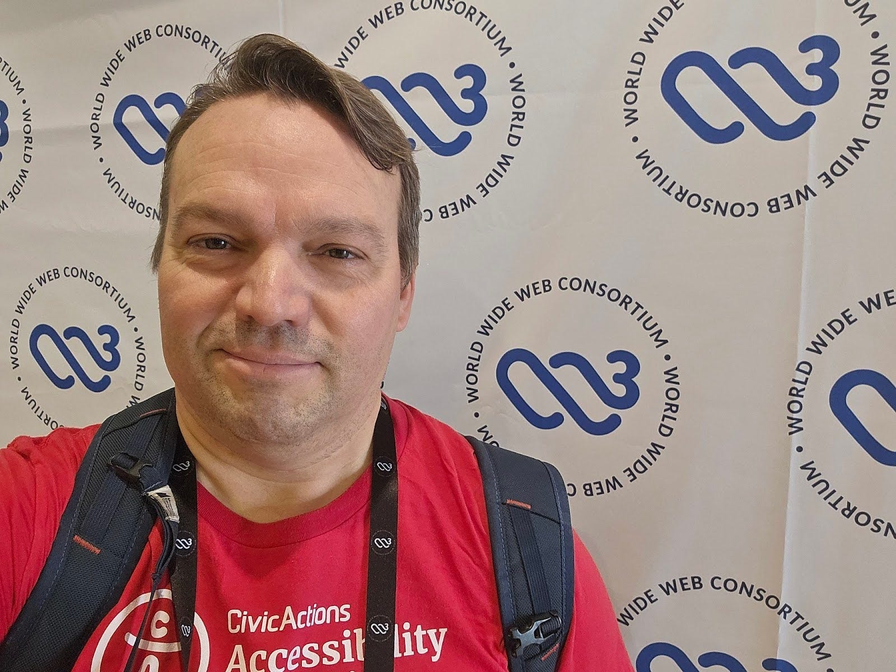
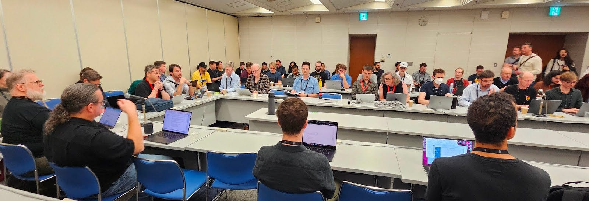

By Mike Gifford, Open Standards and Practices Lead
My attendance at the W3C’s Technical Plenary / Advisory Committee Meetings (TPAC) 2025 in Kobe, Japan, was a terrific learning experience. As an Invited Expert of the W3C, attending my first TPAC and visiting Japan for the first time, I felt a degree of apprehension. It was indeed a packed week with a great many meetings to attend and people to engage with.
The meetings provided a vital setting for contributing alongside seasoned experts who have dedicated years to building the interoperable web we rely on today. My primary focus was on organizing and facilitating the groups I co-chair: the Web Sustainability Guidelines (WSG) Interest Group and the Accessibility Roles and Responsibilities Mapping (ARRM) Community Group.

Navigating the Standards Review Process and Competing Priorities
The work at TPAC underscored the professional reality that creating standards is hard work. It requires navigating complex, and often competing, priorities between maintaining the stability of the existing web and developing forward-looking specifications. It is only through sustained engagement with these standards that they continue to be relevant. There are competing interests within the W3C’s members, but it was very encouraging to see the level of cooperation between those who attended.
Web Sustainability: Measuring Efficiency and Building Resilience
A major focus for the Web Sustainability Guidelines Interest Group was engaging in the W3C’s Horizontal Review process. This involved reaching out before and during TPAC to meet with other technical groups across the Consortium. We needed to build consensus around the guidelines we are proposing.
Our discussions often focused on what technical and policy success criteria could be measured. This is particularly important for both energy and water consumption. Setting up an initial guideline which provides the right incentive for organizations to start reducing their consumption. The ultimate goal is to encourage the building of more resilient digital infrastructure by prioritizing efficiency.
Crucially, throughout these reviews, we did not hear any objections to the WSG becoming a formal guideline. Web sustainability clearly fits within the overarching Ethical Web Principles.
We met with several other groups, covering fundamental areas such as security and performance, which represent the critical maintenance required to keep the web fast and safe. The Web Machine Learning Working Group was an interesting discussion, given the speed with which AI is being infused into so many aspects of web content.

Accessibility: Raising Awareness and Mapping Roles
For the Accessibility Roles and Responsibilities Mapping (ARRM) Community Group, the goal was to advance our work on a critical discussion document. The primary objective was about raising awareness and helping others learn about the work that has been done to support different roles in building more accessible digital interfaces. This mapping aims to clarify which roles (e.g., developer, content author, project manager) hold responsibility for specific accessibility tasks. While not a formal standard, this guidance is vital for the community.
Innovation and Core Maintenance
The remainder of the week involved contributing across the spectrum of W3C activities, highlighting the constant need to balance new technology with existing requirements. One of the more heated discussions was on the Future of the Open Web. With AI, many assumptions of the web are being reconsidered.
General discussions on accessibility occurred throughout the event. Opportunities to substantially advance Authoring Tool Accessibility Guidelines (ATAG) 2.0 were minimal, as a new Community Group for ATAG had only recently been established.
Conclusions
Overall, TPAC 2025 provided a valuable experience that helped me better understand the people and processes behind the W3C. It reinforced the commitment required by all participants to address the challenging balance between securing the web’s present and defining its future. It may have even got me a little closer to embracing the W3C’s use of IRC.